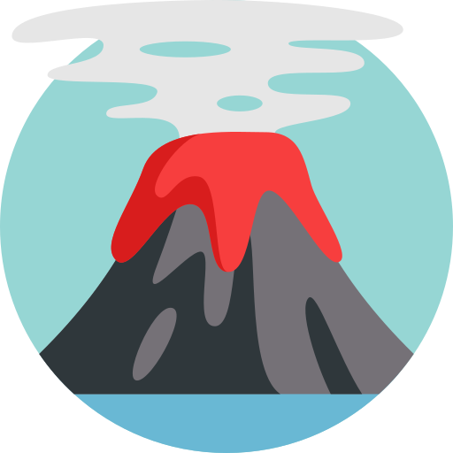
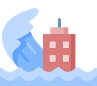

Kami berkomitmen untuk memberikan informasi mengenai Tsunami agar dapat memberikan edukasi kepada masyarakat pentingnya kesadaran mengetahui bencana Tsunami.
Tsunami berasal dari kata Tsu yang berarti “pelabuhan” dan nami yang berarti “gelombang”. Maka tsunami dapat disimpulkan sebagai bencana berupa gelombang laut yang menghantam pelabuhan. Istilah tsunami awalnya diciptakan oleh para nelayan di Jepang karena saat berlayar di laut mereka tidak merasakan adanya gelombang namun ketika sampai di pelabuhan, wilayah tersebut telah rusak parah akibat gelombang tsunami.
Dari kejadian tersebut disimpulkan bahwa tsunami terjadi di wilayah sekitar pelabuhan saja dan tidak terjadi di tengah laut dalam. Menurut Kementerian Energi dan Sumber Daya Mineral tsunami merupakan rangkaian dari gelombang lautan yang dapat menjalar sangat cepat lebih 900 km per jam, tsunami seringkali disebabkan oleh adanya bencana gempa bumi di dasar laut.
Menurut King (1972) dan Anhert (1996) ada tiga faktor utama yang menjadi penyebab bencana tsunami, yaitu:
Adanya retakan yang terjadi di dasar laut dan diiringi dengan suatu gempa bumi. Retakan yang dimaksud adalah zona planar yang bersifat lemah dan bergerak melalui wilayah kerak bumi.
Adanya tanah longsor yang terjadi baik di atas lautan atau di bawah laut, kemudian longsoran tersebut menimpa air dengan keras.

Adanya aktivitas dari gunung api yang lokasinya dekat dari pantai atau memang terletak di bawah air. Gunung api tersebut dapat terangkat atau mengalami tekanan layaknya pergerakan pada suatu retakan.
Extraterrestrial Collision
Selain 3 faktor utama di atas, para ahli seperti Bryant (2001) dalam bukunya berspekulasi bahwa tsunami juga yang disebabkan oleh tabrakan luar angkasa (yaitu asteroid, meteor). Meskipun tidak ada tsunami yang disebabkan oleh meteor/asteroid yang tercatat dalam sejarah baru-baru ini, para ilmuwan menyadari bahwa jika benda-benda langit ini menabrak lautan, sejumlah besar air pasti akan dipindahkan untuk menyebabkan tsunami.

Bencana alam merupakan peristiwa yang hanya akan membawa dampak buruk seperti kehilangan, kemiskinan, kelaparan, dan kesedihan, seperti halnya bencana tsunami ini yang juga menimbulkan banyak sekali dampak atau kerugian antara lain sebagai berikut.
Terjadi Kerusakan Fisik
(bangunan / non bangunan)
Gelombang tsunami yang berkekuatan tinggi ini dalam hitungan detik bisa meluluh lantahkan bangunan, menyapu pasir atau tanah, merusak perkebunan, lahan pertanian serta lahan perikanan, dan lain sebagainya.

Kerugian Material
Gelombang tsunami tersebut dapat menimbulkan kerugian yang bersifat material, diantaranya karena robohnya bangunan, rusaknya lahan pertanian serta perikanan, dan kehilangan seperti harta benda.
Menghambat Kegiatan Perekonomian
Dapat diamati bahwa semua bencana alam dapat mengacaukan kegiatan perekonomian pada suatu wilayah. Kerusakan serta kehilangan akibat gelombang tsunami ini akan melumpuhkan kegiatan perekonomian hingga beberapa waktu.
Menimbulkan Bibit Penyakit
Ketika terjadinya tsunami, maka tidak luput dengan lingkungan yang kotor yang dihasilkan dari benda - benda kotor, tanah berlumpur, dan sebagainya. Apalagi jika ditambah dengan jasad makhluk hidup yang meninggal, maka lingkungan tersebut akan semakin tidak sehat. Pada tempat pengungsian juga dapat menimbulkan bibit penyakit karena kurangnya sarana dan prasarana.
Website Informasi Tsunami
merupakan salah satu website yang memberikan edukasi mengenai tsunami. Hasil yang diharapkan dengan adanya website ini dapat membantu masyarakat lebih memahami tsunami
Hubungi Kami
Kelompok 5
Geology
Universitas Indonesia
OUR NEWSLETTER
Each month we collect the best stuff around the design world and share it with you.
© Copyrights Kelompok 5. All Rights Reserved